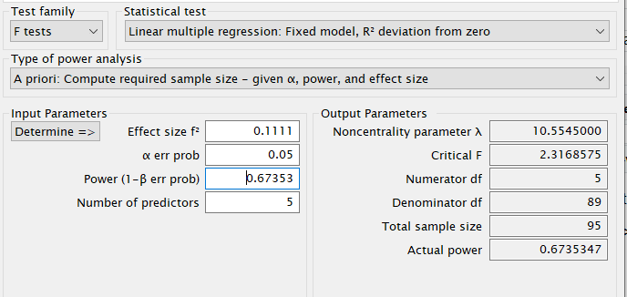
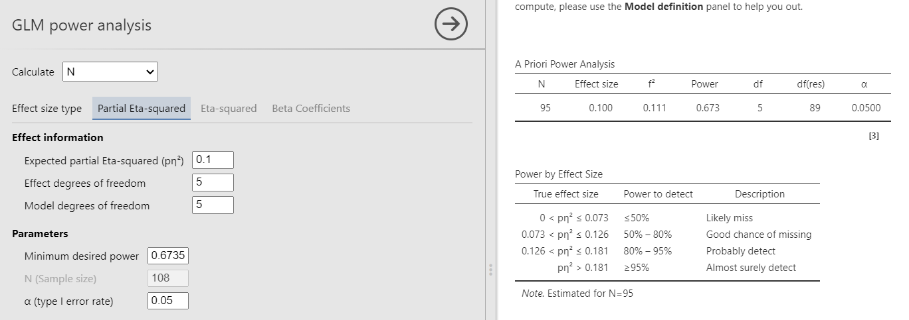
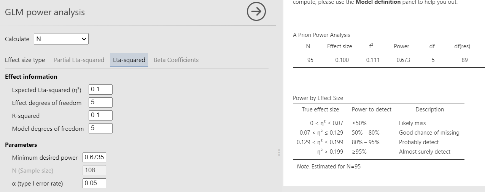
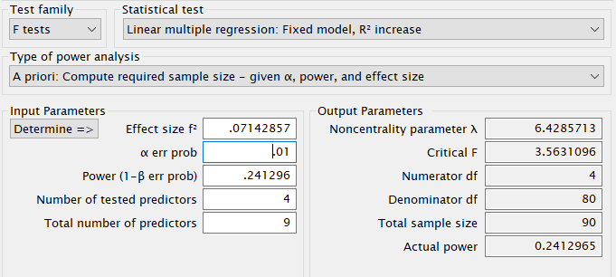
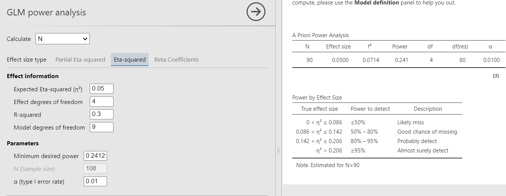
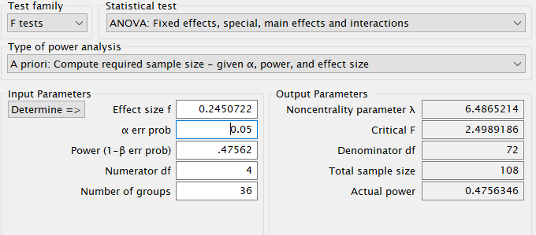
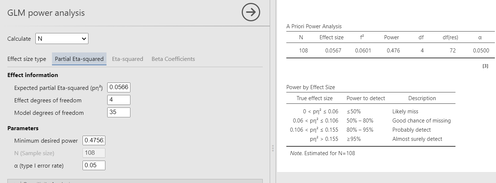

GLM: required sample size
Power Analysis for the General Linear Model
0.2.0
Here we compare the results of PAMLj with other software that performs power analysis. In particular, we will compare our results with R pwr package and G*Power.
We use a few examples from G*Power manual, then we test some other design and analysis. In GPower manual the aim of the analysis is to find the post hoc power, here we look for the minimum sample size given the power obtained in the GPower manual. So, this is not a tutorial on how to conduct a power analysis (the required power is sometimes a non-sense), is a testing exercise to evaluate the correctness of the results.
Multiple regression
Multiple Regression - omnibus (deviation of R 2 from zero), fixed model, p. 33
T he manual estimates the post-hoc power for the F-test associated to the \(R^2\) of a model with 5 predictors. The resulting power is \(1-\beta=.6735\) based on Five predictors me95 cases. So, starting from the given power, we should obtain a required sample size of 95. The model degrees of freedom are 5. Because the test is on the whole model \(R^2\), also the the effect DF are 5. The \(R^2\) is transformed into the \(f^2\) effect size with the simple formula \(f^2=R^2/(1-R^2)\).
Setup
- Aim = Sample Size
- Expected \(R^2\) = .10
- \(f^2\) = 0.1111
- power = .6735
- Effect DF = 5
- Model DF = 5
- Alpha = .05
- Correct results: N = 95
G*Power

R
In R, we can use the pwr.f2.test command, just plugging
in the effect size \(f^2\) and the
effect DF \(u=5\). However, \(N\) should be computed as the residuals
degrees of freedom \(v\) plus the \(u+1\), thus we have \(N=v+u+1\)
##
## Multiple regression power calculation
##
## u = 5
## v = 88.99396
## f2 = 0.1111
## sig.level = 0.05
## power = 0.6735## [1] 95PAMLj
In PAMLj we can use both Partial Eta-Squared or Eta-Squared, because in the case of the \(R^2\) the two effect size are identical. For simplicity, we use Partial Eta-Squared.

Had we used Eta-Squared, we simply put the \(R^2\) to test both in the effect size and the \(R^2\) field, obtaining the same results.

Increase in \(R^2\)
F test: Multiple Regression - special (increase of R2), fixed model , p. 37
The example examines a linear model (regression) with \(R_f^2=.30\) with 9 predictors and compare it to a nested model with \(R_n^2=.25\) with 5 predictors. Basically, the test is aimed at testing the variance explained by 4 predictors present in the full model but not the nested model. The variance explained by the 4 predictors is therefore \(R_f^2-R_n^2=.30-.25=.05\). This is also called \(\Delta R^2\), but more formally is a \(\eta^2\) with 4 degrees of freedom evaluated in a model with 9 degrees of freedom. In the GPower manual the resulting power is .241296 based on a sample of 90 cases. So, we should obtain 90 as the required sample size.
The \(\eta^2\) is transformed into the \(f^2\) effect size with the simple formula \(f^2=(R_f^2-R_n^2)/(1-R_f^2)\).
Setup
- Aim = Sample Size
- \(R_f^2\) = .30
- \(R_n^2\) = .25
- \(\eta^2\) = 0.05
- \(f^2\) = 0.07143
- Power = .241296
- Effect DF = 4
- Model DF = 9
- Alpha = .01
- Correct results: N = 90
G*Power

R
In R, we can use the pwr.f2.test command, just plugging
in the effect size \(f^2\) and the
effect DF \(u=4\). The final \(N\) will results as \(N=v+u+1\)
f2=.05/(1-.30)
u<-4
m<-9
power<- .241296
(res<-pwr::pwr.f2.test(f2=f2,u=u, power=power,sig.level=.01))##
## Multiple regression power calculation
##
## u = 4
## v = 84.60237
## f2 = 0.07142857
## sig.level = 0.01
## power = 0.241296## [1] 90PAMLj
Results are perfectly in line with other software.

ANOVA
F test: Fixed effects ANOVA - special, main effects and interaction p. 27
Here we have an ANOVA design \(A \times B \times C\) with \(A\) and \(B\) having 3 levels and \(C\) with 4 levels. Thus the overall model features 36 groups, with \(A\) and \(B\) effects having 2 degrees of freedom, and \(C\) having 3 DF. The researcher is interested in the sample size required to achieve a power of \(.475627\) of the test associated with the interaction \(A*B\), with a partial Eta-squared \(p\eta^2=0.05665751\). The interaction will have \(DF=2*2=4\) degrees of freedom, and the whole model will have \(DF=35\), the number of groups minus one. Here are the parameters. The resulting sample size should be \(N = 108\).
Setup
- Aim = Sample Size
- \(p\eta^2\) = 0.05665751
- \(f\) = 0.24507
- Effect DF = 4
- Model DF = 35
- Power = .475627
- Alpha = .05
- Correct results: N = 108
G*Power
First notice that for this problem, GPower offers F test: Fixed effects ANOVA routine, which requires an \(f\) as the effect size . \(f\) is simply the square root of \(f^2\) so it can be computed from the partial Eta-squared as \(f=\sqrt{p\eta^2/(1-p\eta^2)}\) .
Plugging in the parameters we obtain:

R
As we have seen in Rosetta: GLM
posthoc power, pwr.f2.test command will underestimate
the power due to the fact that the non centrality parameter is smaller
than the one used in G*Power. Nonetheless, we can get an approximated
estimation of the sample size by computing the N employing the whole
model DF \(m=35\), yielding \(N=v+m+1\)
f<-0.2450722
u<-4
m<-35
f2<-f^2
power=.475627
(res<-pwr::pwr.f2.test(f2=f2,u=4, power=power,sig.level=.05))##
## Multiple regression power calculation
##
## u = 4
## v = 101.0071
## f2 = 0.06006038
## sig.level = 0.05
## power = 0.475627## [1] 137As expected, the required sample size obtained in
pwr.f2.test is larger than the one obtained in GPower.
PAMLj
We plug in the partial Eta-squared and the required parameters, and we obtain N=108, as in GPower.

Back to
References
’
Comments?
Got comments, issues or spotted a bug? Please open an issue on PAMLj at github or send me an email